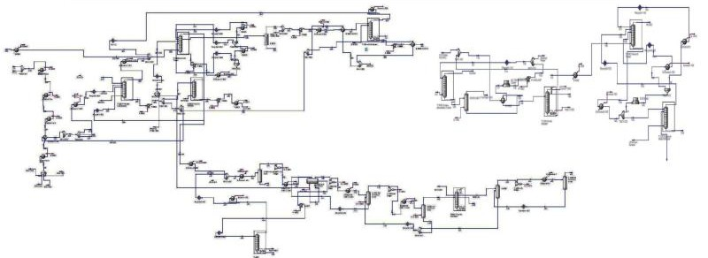

Workplace
UBC Norman B. Keevil Institute of Mining Engineering, Vancouver, Canada.
Timeline
2023: Jan. - 2025: Dec.
Project
Microwave assisted drying of minerals, with Dr. Ali G. Madiseh.
Project Goal
Retrofitting of conventional drying unit operations at a local industrial mining partner.
Project Summary
Inspected and evaluated, experimentally and numerically (via Finite Element Modeling in COMSOL), the feasibility and applicability of microwave-based heating systems at a local mining industrial partner for the retrofitting of conventional drying unit operations.
Tasks Performed
- Performed experimental and numerical analysis of mineral drying behavior under microwave exposure.
- Utilized finite element modeling (FEM) to simulate heat and mass transfer during drying at various microwave power levels and mineral types.
- Conducted comprehensive energy demand analysis to evaluate potential savings compared to traditional kiln operations.
Workplace
University of Tehran, Tehran, Iran.
Timeline
2012: Sept. - 2014: Sept.
Project
Thermo-kinetic modeling of the wet phase inversion process for polymeric membranes fabrication, with Dr. Mohammad Ali Aroon.
Project Goal
Developed a comprehensive thermo-kinetic model to simulate the wet phase inversion process for fabricating polymeric membranes, focusing on Multiphysics coupling and accurate prediction of polymeric flat-sheet membrane structure evolution.
Tasks Performed
- Constructed and solved coupled heat, mass, and momentum transport models under non-equilibrium thermodynamics, incorporating moving boundary conditions in multiphase, multicomponent porous systems.
- Formulated and implemented partial and ordinary differential equation solvers (PDE/ODE) to capture the transient dynamics of solvent-nonsolvent exchange and polymer precipitation.
- Wrote custom code in Fortran, MATLAB, and C++ for high-fidelity numerical simulations and sensitivity analyses.
- Validated computational results against experimental measurements, achieving strong agreement in membrane morphology predictions.
- Gained insight into phase separation kinetics, diffusion mechanisms, and the impact of process parameters on membrane performance and structure.
Workplace
University of Tehran, Tehran, Iran.
Timeline
2007: Sept. - 2011: Sept.
Project
Simulation and cost evaluation of hot section of BIPC olefin plant, with Dr. Nasim Tahouni.
Project Goal
Used Aspen Hysys and Aspen Plus to evaluate retrofitting of industrial scale petroleum refinery complex by producing process flow diagram (PFD), piping/process & instrumentation diagram (P&ID), cost and utility, pinch and exergy.
Tasks Performed
- Simulated existing and proposed process configurations using Aspen HYSYS and Aspen Plus, focusing on optimizing reactor and separation systems for olefin recovery.
- Developed and documented detailed Process Flow Diagrams (PFDs) and Piping & Instrumentation Diagrams (P&IDs) to map unit operations, control loops, and equipment connectivity.
- Performed equipment sizing and specification for heat exchangers, reactors, compressors, and distillation columns based on simulated operating conditions.
- Conducted cost estimation and utility analysis (CAPEX and OPEX) to support retrofitting and procurement decisions.
- Applied pinch analysis and exergy analysis to evaluate and enhance energy integration and thermodynamic efficiency across the system.
- Assessed retrofitting feasibility by integrating performance data, economic viability, and process safety considerations.
